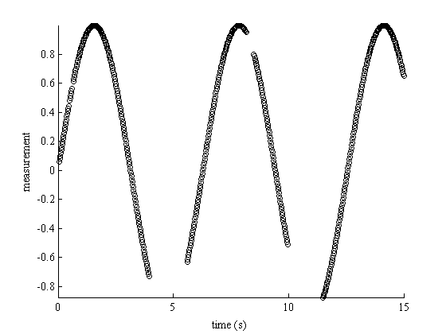
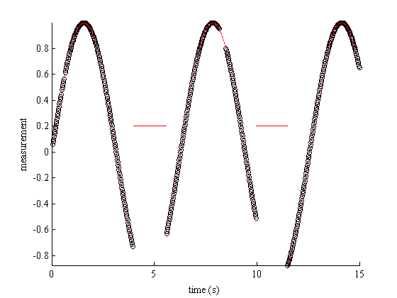
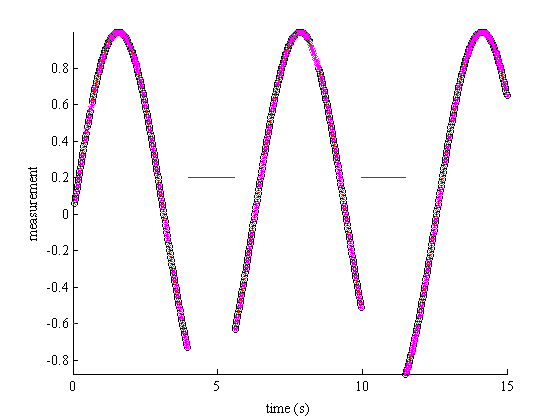
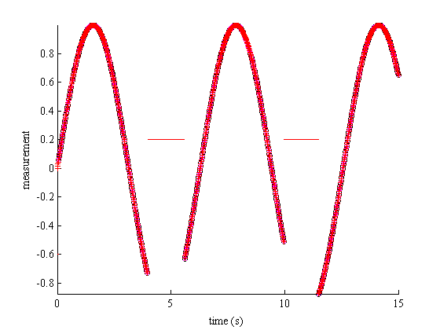
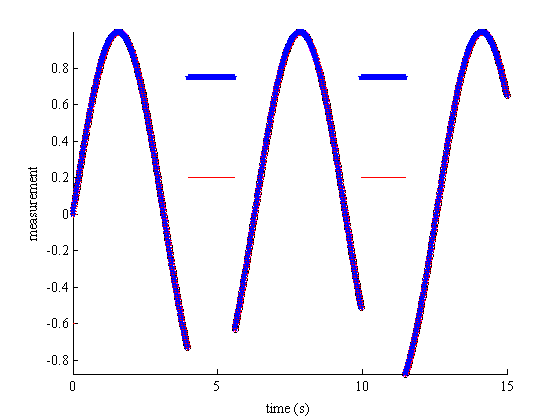
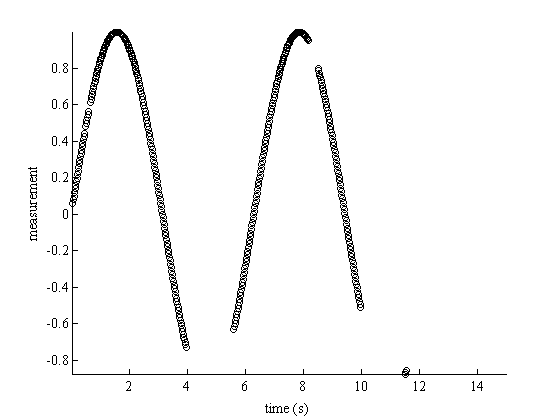
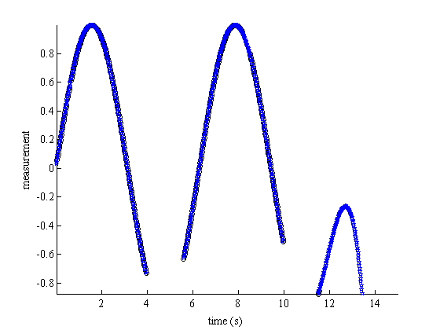
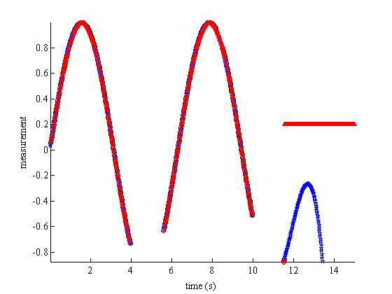

interp1gap documentation
This function performs interpolation over small gaps in 1D data.
Contents
Syntax
vq = interp1gap(v) vq = interp1gap(x,v,xq) vq = interp1gap(...,maxgapval) vq = interp1gap(...,'method') vq = interp1gap(...,'interpval',vval) vq = interp1gap(...,'extrap',extrapval)
Description
vq = interp1gap(v) linearly interpolates to give undefined (NaN) values of v.
vq = interp1gap(x,v,xq) interpolates to find vq, the values of the underlying function v at the points in the vector or array xq.
vq = interp1gap(...,maxgapval) specifies a maximum gap in the independent variable over which to interpolate. If x and xq are given, units of maxgapval match the units of x. If x and xq are not provided, units of maxgapval are indices of v, assuming any gaps in v are represented by NaN. If maxgapval is not declared, interp1gap will interpolate over infitely-large gaps.
vq = interp1gap(...,'method') specifies a method of interpolation. Default method is 'linear', but can be any of the following:
- 'nearest' nearest neighbor interpolation
- 'linear' linear interpolation (default)
- 'spline' cubic spline interpolation
- 'pchip' piecewise cubic Hermite interpolation
- 'cubic' (same as 'pchip')
- 'v5cubic' Cubic interpolation used in MATLAB 5.
- 'next' next neighbor interpolation (Matlab R2014b or later)
- 'previous' previous neighbor interpolation (Matlab R2014b or later)
vq = interp1gap(...,'interpval',vval) specifies a value with which to replace vq elements corresponding to large gaps. Default is NaN.
vq = interp1gap(...,'extrap',extrapval) returns the scalar extrapval for out-of-range values. NaN and 0 are often used for extrapval.
Example 1: Interpolate over small gaps in time
You've recorded some data at 50 Hz, but your data logger was finicky. Sometimes it would stop logging data for a few samples, and sometimes it would fail for several seconds. For your project you know that you can't interpolate over any data gaps larger than half a second long, but if only a few consecutive 50 Hz samples are missing, interpolation is okay.
To illustrate this, we create some data with holes in it:
t = 0:.02:15; y = sin(t); y([1:3 25 32:33 200:280 410:425 500:575]) = NaN; plot(t,y,'ko'); box off; axis tight; hold on xlabel('time (s)') ylabel('measurement')
You'd like to interpolate over small gaps in the data, but you've deemed it inappropriate to interpolate when more than half a second of data are missing:
ti = 0:.015:15; yi = interp1gap(t,y,ti,.5,'cubic','extrap',-.6,'interp',.2); plot(ti,yi,'r.')
Similarly, you may just want to interpolate over the NaNs in y for any data gaps in y smaller than 25 samples:
y2 = interp1gap(y,25);
plot(t,y2,'mx')
 Gaps in data do not have to be represented by NaN values. Your datalogger may print a NaN for every missing sample, or it may print nothing at all. In which case, your data would look like this:
t(isnan(y)) = []; y(isnan(y)) = [];
You can still use interp1gap just the same. Here we'll do a spline interpolation for data gaps less than half a second long:
y3 = interp1gap(t,y,ti,.5,'spline'); plot(ti,y3,'r+')
Example 2: Replace large holes in data with a given value
Using the data from above, replace missing data with y = 0.75, but only if data gaps are correspond to more than half a second of missing data:
y4 = interp1gap(t,y,ti,.5,'pchip','interpval',.75); plot(ti,y4,'bp')
Example 3: Extrapolation
By default, cubic and spline interpolations extrapolate beyond the extents of underlying data, whereas linear interpolation does not extrapolate. If you do not want spline interpolation to extrapolate, specify 'extrap',NaN or 'extrap',0.
Let's set the last 173 values of y from Example 1 to NaN and take a look at different methods of extrapolation. The figure from examples 1 and 2 is getting a bit busy, so we'll clear the figure and start anew:
y(400:end)=NaN; clf plot(t,y,'ko'); box off; axis tight; hold on xlabel('time (s)') ylabel('measurement')
By default, interp1 and interp1gap will extrapolate those last values of y when perfoming cubic interpolation. Here's what extrapolation looks like:
y_cubic_extrap = interp1gap(t,y,ti,.5,'pchip'); plot(ti,y_cubic_extrap,'bp')
To prevent interp1gap from extrapolating, set the extrapval to NaN or some scalar value. Here we set extrapval to 0.2:
y_cubic_extrapscalar = interp1gap(t,y,ti,.5,'pchip','extrap',.2); plot(ti,y_cubic_extrapscalar,'r^')
Author Info
Written by Chad A. Greene of the University of Texas at Austin's Institute for Geophysics (UTIG) with a little help from 'Paul', February 2014. Updated November 2014 to allow for monotonically-decreasing x values.